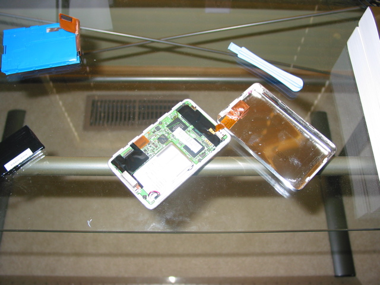

So, my iPod was down to about an hour of life after a full charge. How did this happen? Well, take most of what Apple suggests to do, and simply not do it. (I'm just evil on the poor thing.) This is just not good, and clearly must be rectified. But I'm not quite in the position to go buy a new iPod. (besides, I like the buttons of the 3rd Generation better.)
So, based on a recommendation of a coworker, I head over to the iPod Battery FAQ. Nice, I should be able to fix this for about $30, instead of $300. I decided on the NewerTech one simply because of the video. (well that and it was the cheapest when I looked.)
When it finally showed up, it was time to pop the iPod open. It was a pain to open. I broke one of the little plastic tools that came with the battery before I went and watched that video again. The guy in the video has a really good tip for opening it, and once I employed that, the case popped apart quite easily. Then carefully unburied the old battery, put the new one in, and put it all back together. Plugged it into the wall for the new battery's first charge. A quick run through showed that, while plugged into the wall, everything was working. (spiffy, got all the wires in the right place then.) So now its a wait and see.
Oh, and having the iPod open, I just had to snap a photo quick:

Ah wonderful, the new battery has a longer play time fully charged than the previous did when it was new. All in all, things are good again.